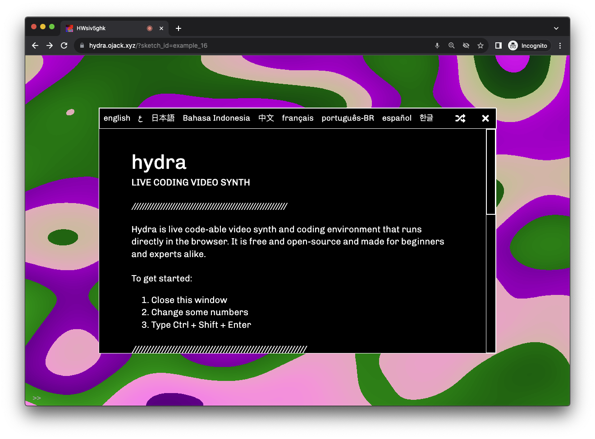

O que é Hydra? #

Hydra é um sintetizador de vídeo para codificação ao vivo (livecoding) que funciona no navegador. É software livre e pode ser usado tanto por iniciantes como por profissionais. Você pode simplesmente abrir o hydra web editor em um laptop ou dispositivo móvel para começar.
Hydra é escrito em JavaScript e compila para WebGL por trás das cortinas. Sua sintaxe foi inspirada em sistemas analógicos e modulares de síntese de vídeo, onde são gerados visuais através da interconexão de sinais com diversas transformações.
Hydra pode ser usado para: #
- mesclar e adicionar efeitos a imagens de uma câmera, uma captura de tela, transmissões ao vivo ou vídeos
- criar visuais generativos e áudio reativos e compartilhar na internet com outras pessoas
- combinar com outras bibliotecas de JavaScript, como p5.js, Tone.js, THREE.js ou gibber
- adicionar efeitos de vídeo interativos em um website
- experimentar e aprender sobre retroalimentação de vídeo (feedback), fractais e outras operações visuais
- transmitir vídeo entre navegadores e fazer jams online com outras pessoas
Demais recursos e próximos passos #
Para mais instruções e informações, acesse: a documentação interativa em português, uma lista de funções hydra (inglês), a base de dados comunitária de projetos e tutoriais (inglês), uma galeria de sketches feitos por usuários e o código fonte no github.
Hydra é uma criação de olivia jack apoiada por uma comunidade de colaboradores. Se você gosta de usar o Hydra, considere por favor incentivar seu desenvolvimento contínuo.
Próximo: Começando